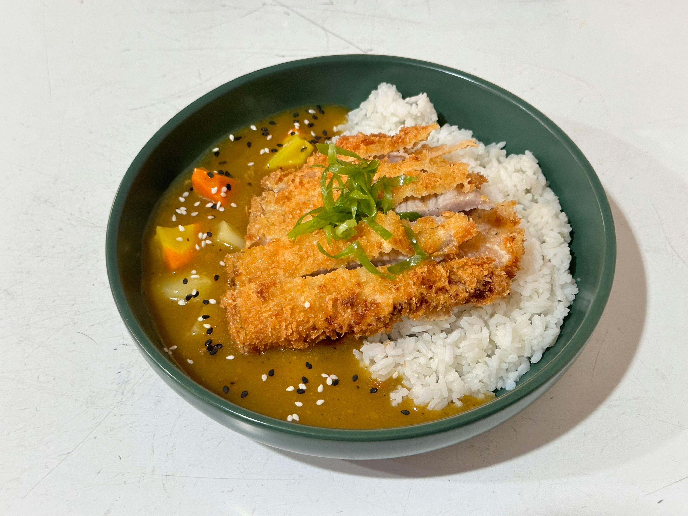

Chicken Katsu Curry
Recipe for a Katsu Curry!
This is a recipe for an easy, tasty and authentic chicken katsu curry. It will take around 20-30mins for the sauce, but it takes time to prep veg and rice. So set aside 1hr15mins approx overall.
Ingredients
- S&B Golden Curry Japanese Curry Mix 92g (Medium or hot)
- Half a large onion, or 1 small onion, sliced
- 2 or 3 carrots, diced
- Sushi grade short-grain rice, 1/2 cup per person
- 1 breaded chicken cutlet per person
- Optional: one potato, diced
Steps
- Start to prepare rice:
- Put dry rice into pot and wash by running cold water and swirling it around with your fingers
- Pour out cloudy, starchy water until only a tiny amount is left. Repeat Steps 1 & 2 3-4 times until water becomes clear.
- Drain rice in a sieve, put it in a medium sized pot, and add 3/4 cup water per 1/2 cup of rice
- Leave rice to soak for 20-30 mins
- You could prep veg now to save time later
- After 30mins, cover rice with lid and bring to boil over a medium heat. This should take ~10 mins. You might want to start breaking up the curry mix block to save time later.
- At same time, add 1tbsp vegetable oil to a large pot and sweat onions over a medium heat for 5 mins
- Once the rice starts boiling set timer for 30 minutes and turn hob down to simmer.
- At the same time, add 750ml cold water to onions, add carrots & potato if using, and bring to boil over medium heat. This should take ~10 mins
- At 10 minute mark, preheat oven 200°C, 180°C Fan.
- After 13 mins has passed, take rice off heat and let it sit for at least 10 mins. Put chicken in oven,
- Meanwhile, cover large pot and simmer for 15 mins.
- Take large pot off heat & add the curry mix. Stir well and dissolve thoroughly. Put pot back on heat and simmer for 5 mins, stirring constantly.
- Dish out rice, ladle on curry, & by then the chicken should be cooked so take it out, cut it into slices, place on top of rice & and serve